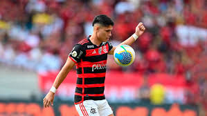
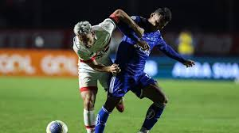
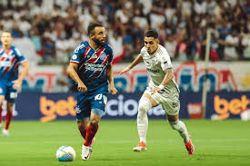

Últimas Notícias de Futebol
Notícia Principal

Flamengo pode ficar sem Luiz Araújo por até 2 meses.
Link da matéria completa.Outras Notícias
Estevão vira destaque no atropelo do Palmeiras encima do Criciuma.
Link da matéria completa.
Cuzeiro recebeu o São Paulo porém fica na derrota.
Link da matéria completa.
O tricolor baiano derrotou o Atlético-MG em casa.
Link da matéria completa.